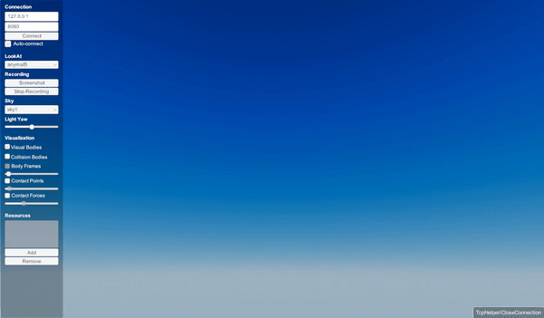

CustomLengthConstraint
CustomLengthConstraint allows users to apply custom constraints.
Users set the tension between two points using setTension().
An example is shown below:
auto wire7 = world.addCustomWire(pin7, 0, {0,0,0}, anymalB, 0, {0., 0, 0}, 2.0);
wire7->setTension(400);
The following code results in:

You can find a runnable example here.
API
-
class CustomLengthConstraint : public raisim::LengthConstraint
Public Functions
-
void setTension(double tension)
set the tension of the wire
- Parameters:
tension – the applied tension. If this number is positive, then the force is acting such a way that brings the two objects together
-
void setTension(double tension)